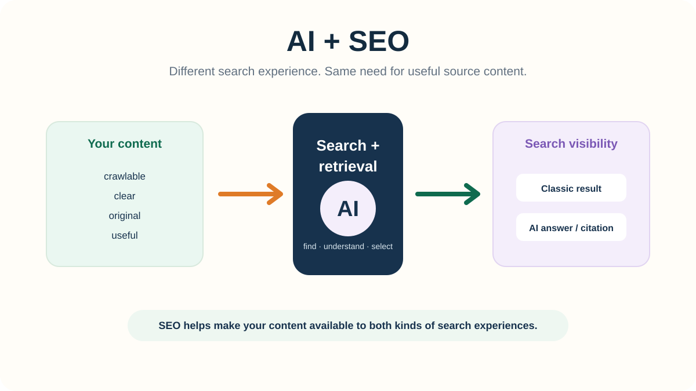

PUBLISHED
GO DEEPER
SEO + Discovery
AI + SEO: How AI Changes Search and How SEO Helps You Show Up
How AI changes search, why SEO still matters, and what helps your content become useful source material.
7 min read →